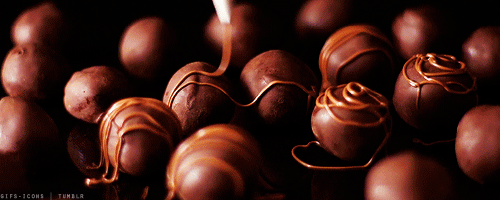
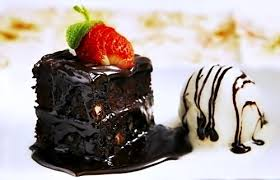
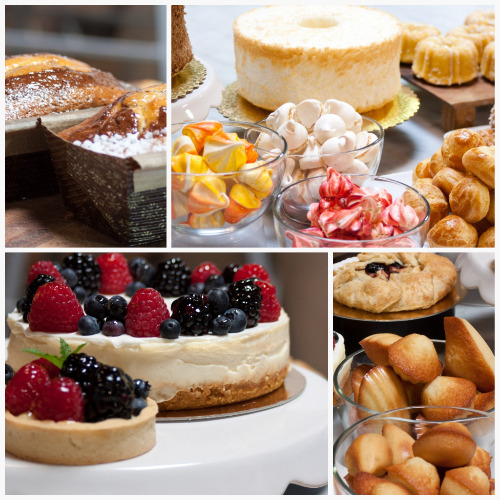

Chocolate is a typically sweet, usually brown, and most wildy liked dessert that could also be made in many ways


>whether its cookies, cake, pies or anyother desserts,they sure do taste good baked. Hereere are some exaple of baked desserts:
